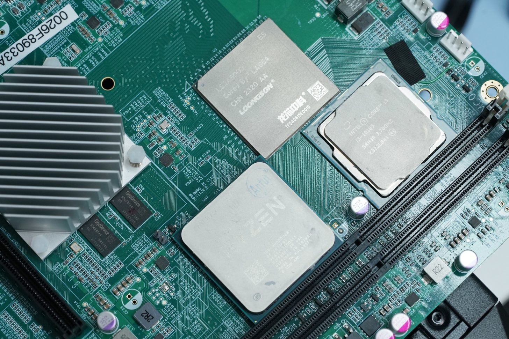
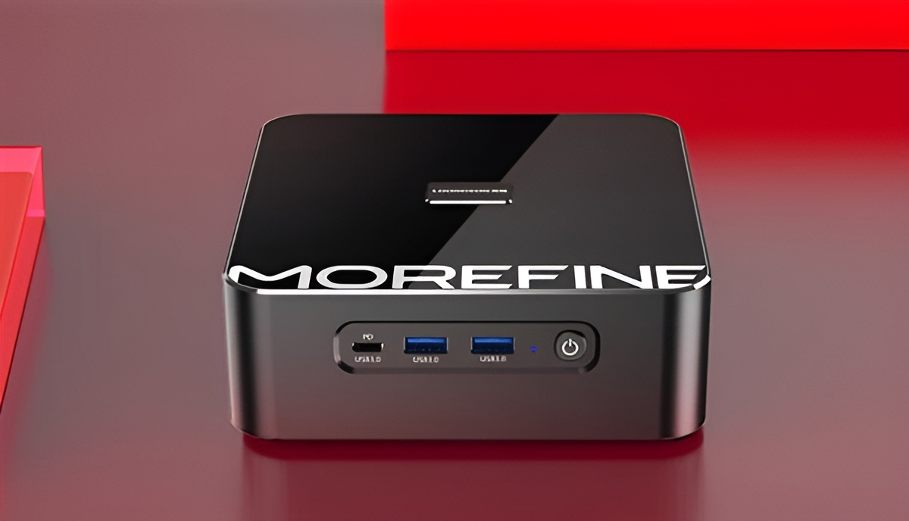
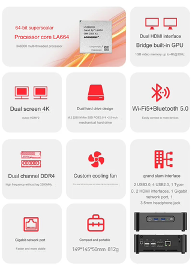
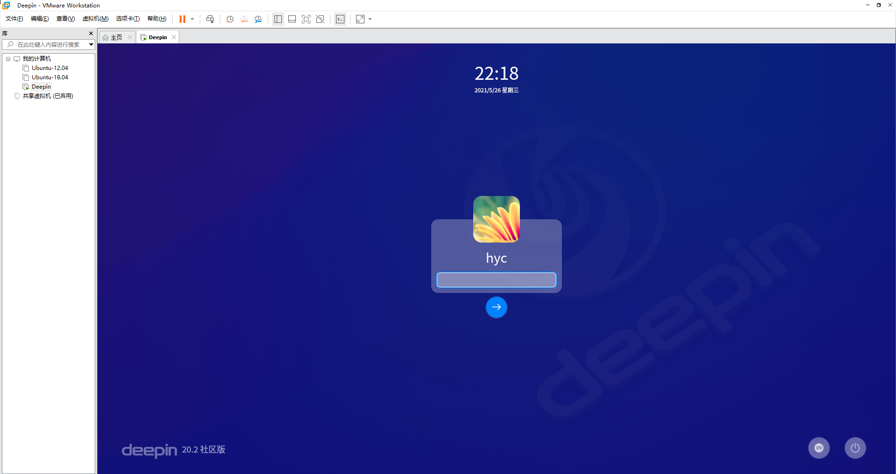
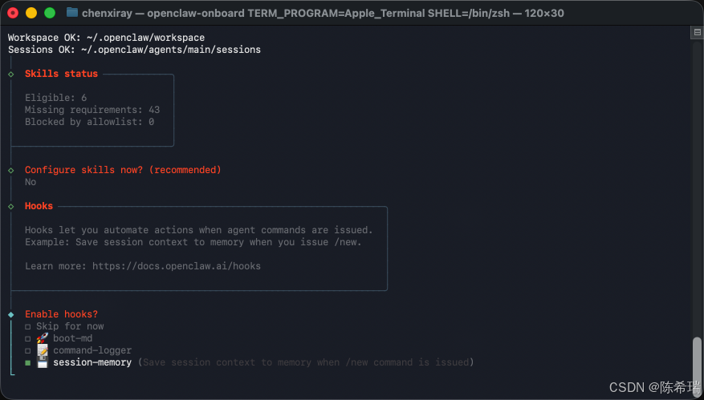
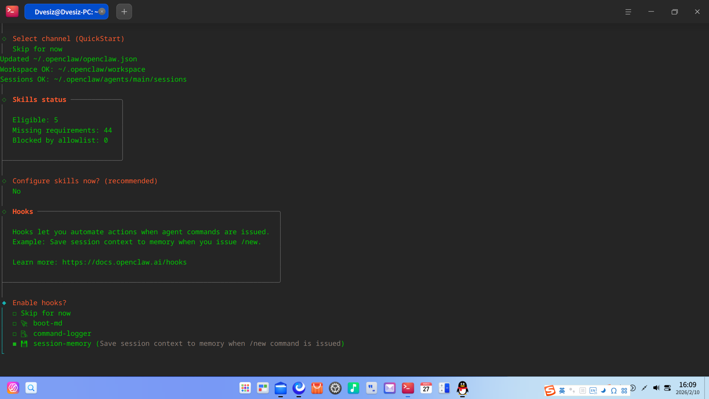
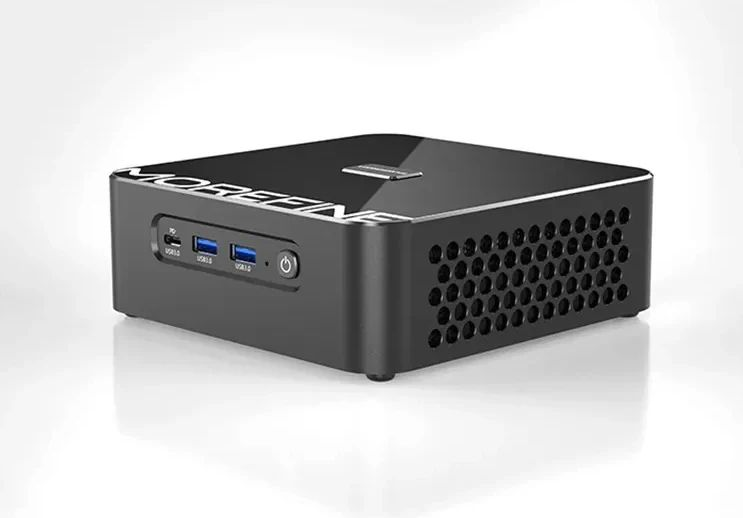
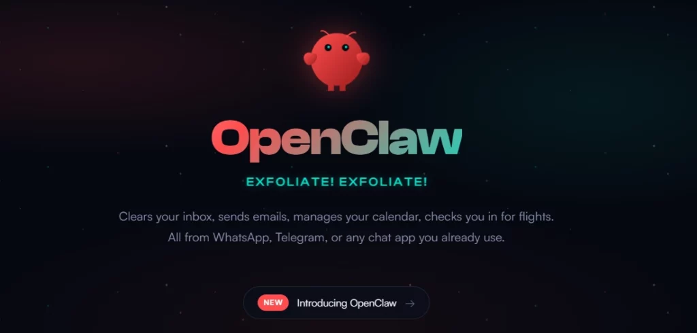

在国产 LoongArch 架构 mini PC 上，从零编译并运行 OpenClaw 智能助手
# 完全自主可控 · 拒绝技术封锁

龙芯3A5000是中国科学院计算技术研究所自主研发的64位通用处理器， 采用完全自主的LoongArch指令集架构，不依赖任何国外技术授权。 这款芯片标志着中国在CPU领域实现了从设计到制造的完全自主可控。
| Architecture | Specification | Performance |
|---|---|---|
| 指令集 | LoongArch 64-bit | 自主知识产权 |
| Cores | 4 × LA464 | 全核2.5GHz稳定 |
| Memory | DDR4-3200 | 双通道，高带宽 |
| TDP | 35W | 低功耗，静音 |
| Process | 12nm | 台积电工艺 |
| PCIe | PCIe 3.0 ×16 | 支持NVMe |
✓ 为什么选择龙芯3A5000？
这是一款真正国产化、自主可控的处理器，适合个人开发者、技术爱好者、
以及有数据安全需求的场景。性能完全满足日常开发、服务器、智能家居等应用，
是参与国产芯片生态建设的绝佳选择。



访问 Deepin 官网或镜像站，获取 LoongArch 架构的 ISO 镜像：
# 示例命令（实际URL请访问官网获取）
wget https://cdimage.deepin.com/loongarch/在 x86 电脑上使用 dd 命令写入U盘：

# 查看U盘设备
lsblk
# 写入（/dev/sdX 替换为你的U盘设备）
sudo dd if=deepin-loongarch.iso of=/dev/sdX bs=4M status=progress
sudo sync
在安装向导中选择"专家分区"或"自动分区"，建议配置：
/ (root) - 20GB+，ext4 文件系统swap - 内存的 1-2 倍（8GB 内存可配 8GB swap）/home - 剩余空间，ext4安装过程中会下载必要组件，保持网络畅通。安装完成后重启。
# 验证架构
uname -m
✓ 正确输出： loongarch64

# 安装必备工具链
sudo apt install -y \
git curl wget \
build-essential \
python3 python3-pip \
vim nano \
htop tmux \
certbotcd /tmp
wget https://nodejs.org/dist/v20.11.1/node-v20.11.1-linux-loongarch64.tar.xz
tar -xf node-v20.11.1-linux-loongarch64.tar.xz
sudo mv node-v20.11.1-linux-loongarch64 /opt/nodejs
# 创建软链接
sudo ln -sf /opt/nodejs/bin/node /usr/local/bin/node
sudo ln -sf /opt/nodejs/bin/npm /usr/local/bin/npm
sudo ln -sf /opt/nodejs/bin/npx /usr/local/bin/npxgit clone https://github.com/nodejs/node.git
cd node
git checkout v20.11.1
./configure --without-intl
make -j$(nproc)
sudo make install⏱️ 预计耗时 1-2 小时（4核并行编译）
node --version 和 npm --version 确认安装成功。

✓ 验证部署成功：
在龙芯 mini PC 同一局域网的设备上，打开浏览器访问：
http://[龙芯IP地址]:8080
如果看到 OpenClaw 欢迎页面，恭喜你——国产芯智能助手已成功运行！
| 问题现象 | 解决方案 |
|---|---|
npm ERR! 安装失败 |
原因：LoongArch 包缺失或网络超时 解决：更换 npm 源 npm config set registry https://registry.npmmirror.com |
openclaw: command not found |
原因：npm 全局路径未加入 PATH 解决： sudo npm config set prefix /usr/local然后重新安装 |
| 服务启动后立即退出 |
原因：端口占用或权限不足 解决： sudo lsof -i:8080 # 查看占用进程 sudo kill -9 PID # 结束进程 |
| Node.js 编译耗时过长 |
原因：龙芯性能有限，单核编译慢 解决：使用 make -j4 启用4核并行编译
|
| 网页无法访问 API |
原因：CORS 跨域限制 解决：配置 OpenClaw 允许跨域或使用 Nginx 反向代理 |
tmux 或 screen 保持会话，SSH 断开后服务不中断~/.openclaw/logs/ 目录下的日志文件htop 监控系统资源占用情况
恭喜！
你已经在 龙芯3A5000 mini PC 上成功编译并运行了 OpenClaw 智能助手系统。
这是100%国产化、完全自主可控的部署方案，从硬件芯片到软件平台都是国产技术栈。
# 为国产芯生态贡献一份力量